II Commandments — design breakdown
Everything here starts from the founder's own reference list (his Google Doc, "CALLING ALL CHRISTIANS"). For each site: a screenshot, his words about it, the specific device we take from it, and where that device lands in our site. The three concepts below are assembled from these devices — each one names which.
- References for the message
- References for the store
- Studies — one per reference
- The three concepts
- Working build
- Full notes
References for the message (the home page)
His "Design reference points // flow" and "Cinematic websites that tell a story." Screenshots are what a static capture shows; several of these are WebGL experiences behind a loader.
-
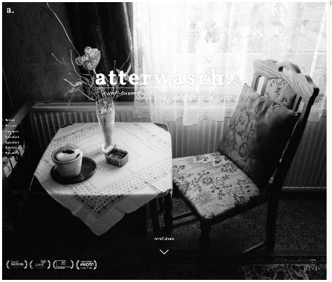
Most importantatterwaschscroll-documentary
Possibly the best example of carrying a narrative.— his doc
- Device
- A full-bleed black-and-white photograph with the wordmark set into it; a stark chapter list (Future · Present · Episode 1–5 · Past) on black.
- Lands in
- Panel 1 — the verse on the image ("Jesus in the background" from the storyboard); panel 5 — the four Gospels as the chapter list.
- Used by
- 2 Documentary
-
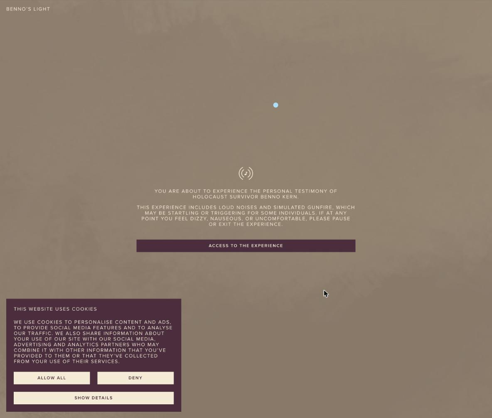
Benno's Light
Once you're 'in', click on 'Chapter Content'. I like that set up for row 11 on the excel 'related verses after'. Something to consider. I like the way it animates when you click on 'All Chapters'.— his doc
- Device
- A chapter index that slides open over the experience, from anywhere, and animates.
- Lands in
- Panel 11 — related verses as a drawer over the page, not another panel to scroll. (He named this one.)
- Used by
- 1 Paper2 Documentary3 Colour
-
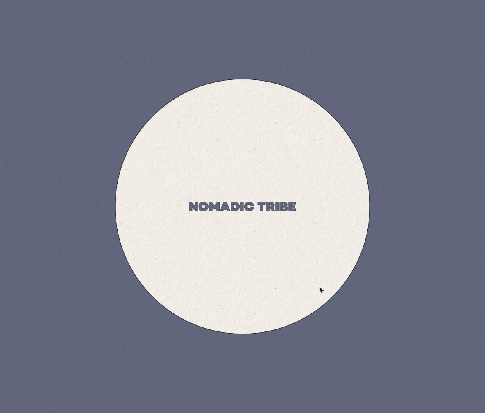
Nomadic Tribemakemepulse
Great storytelling site. I like how it leads you from one part of the story to another. Def a reference point for us.— his doc
- Device
- One continuous scroll; each beat hands you to the next; you always sense where you are in the story.
- Lands in
- The spine of the home page — panels 1 → 12 as one scroll, no hard cuts, a "continue" cue at the bottom of each beat.
- Used by
- 123
-
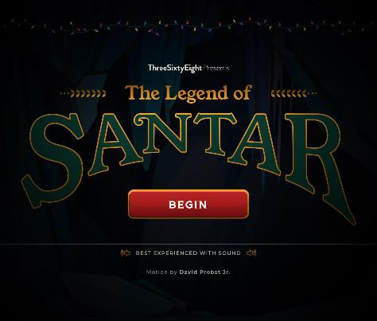
The Legend of SantarThreeSixtyEight
Highly animated.— his doc
- Device
- An explicit Begin gate ("best experienced with sound"), then a scroll-animated tale — built in Webflow, no WebGL.
- Lands in
- The "momentary experience when you reach the site" from the meeting notes; proof the animation can be done simply.
- Used by
- 2 Documentary
-
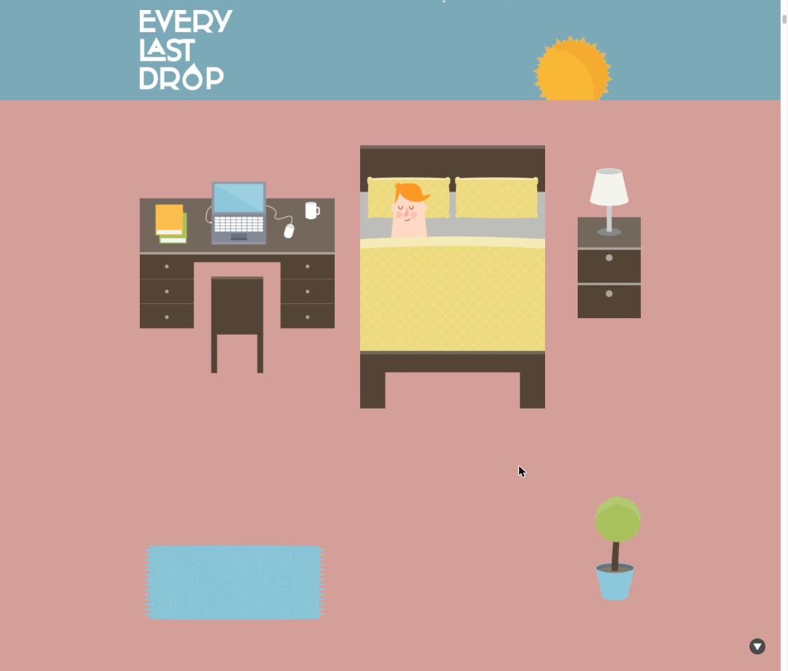
Every Last Drop
Keeps you engaged through the whole story.— his doc
- Device
- The scene and the sky colour change as you scroll — the page moves through a day.
- Lands in
- Background changing per panel so scrolling feels like moving through the Gospels; each Gospel a colour.
- Used by
- 3 Colour
-
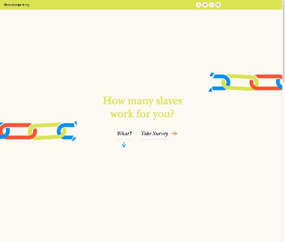
Slavery Footprint
Still my favorite even though it doesn't scroll like it used to.— his doc
- Device
- One question, one serif line, centred, generous space, one thing to do next.
- Lands in
- The tone of panel 1 — the verse alone, and the two-part "If you love me…" beat.
- Used by
- 1 Paper
-
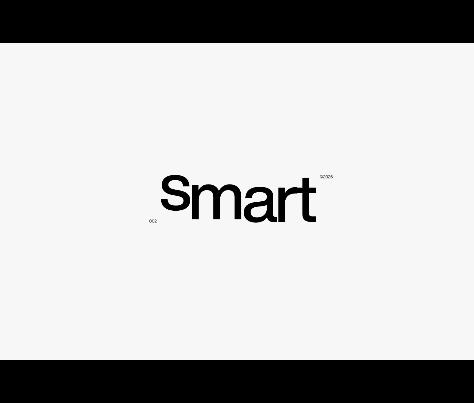
sofi healthin his doc twice and in the storyboard
Like panel 6 from sofihealth.com — the one with the awesome graphic "plant powered".— storyboard, row 13 (church picker)
- Device
- One word at a time, huge, morphing into the next; a floating mid-screen menu that shows a name in a beautiful face.
- Lands in
- Panel 1 hero as word-by-word; panel 13 church picker as the floating name.
- Used by
- 1 Paper
-
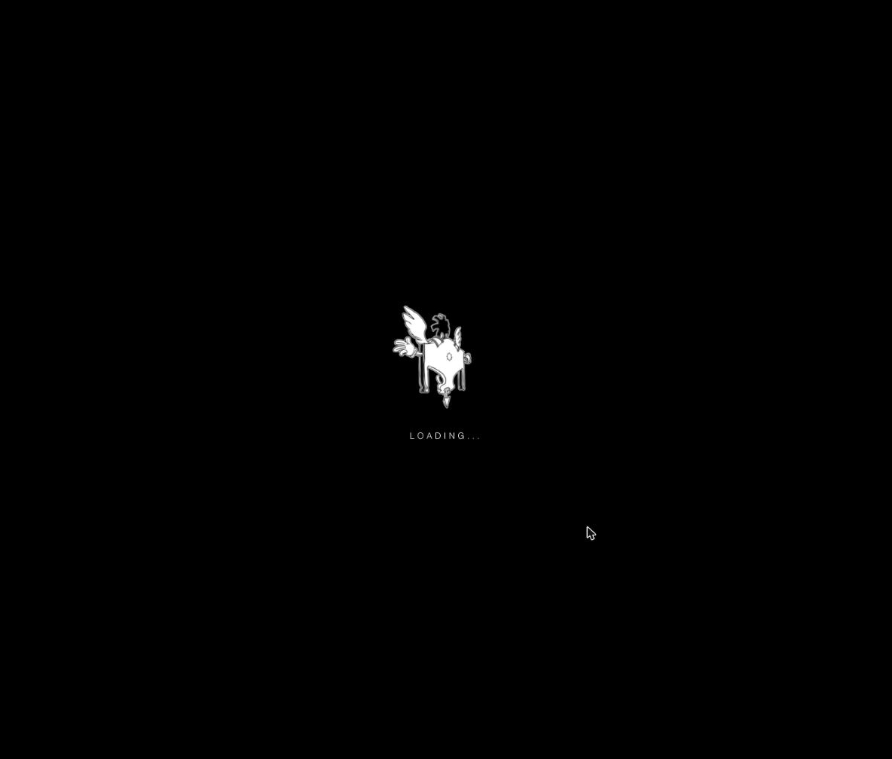
Pierre Hermé & Nicolas Buffeinteractive adventure
— on his "most important" list, no comment
- Device
- Illustrated chapters; the loader is itself a drawing. Also Jitter's "Blend Modes, Circle Stack" from the storyboard for the logo.
- Lands in
- Panel 2 — the II Commandments mark as a layered, moving transition device.
- Used by
- 23
References for the store (designers, church, shop)
His "Store related — for consideration."
-
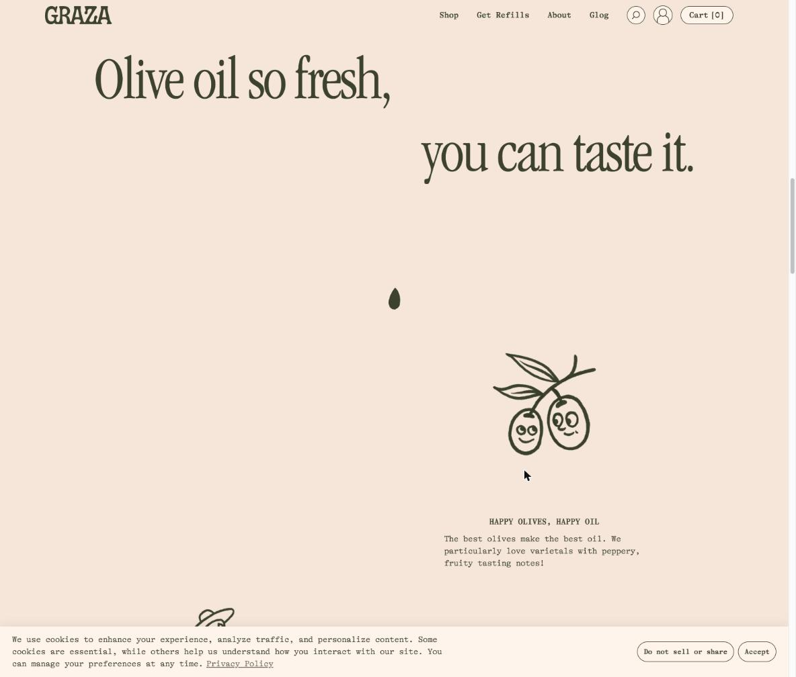
Graza
I love this site. Let's just leave it as a reference. On the top menu, hover on 'Shop'. Pick 'Fancy Mayo' and then just scroll down. Maybe here we can put info about the designer? Something about the Church/non-profit?— his doc
- Device
- A headline split across two lines with a hand-drawn mark between them; a product page that scrolls into its story; serif display + mono body on paper.
- Lands in
- The product page: design → the designer's story → the church it supports → buy. The split headline in panel 1.
- Used by
- 1 Paper
-
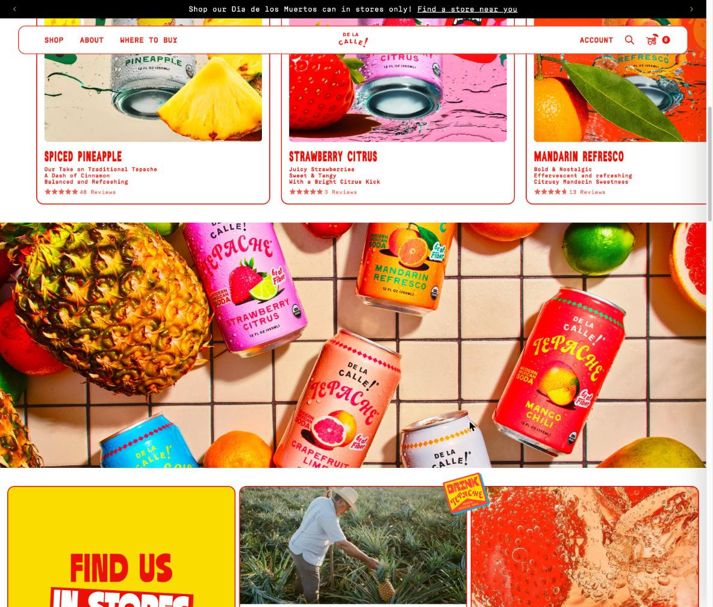
De La Calle — Tepache
Love this site! and interwoven storytelling. When you're going from product to product it really feels like you're navigating.— his doc
- Device
- Each flavour is its own colour world; product → product feels like walking between rooms; condensed caps.
- Lands in
- Each Gospel (and each designer) as a colour room; the shop moves room to room.
- Used by
- 3 Colour
-
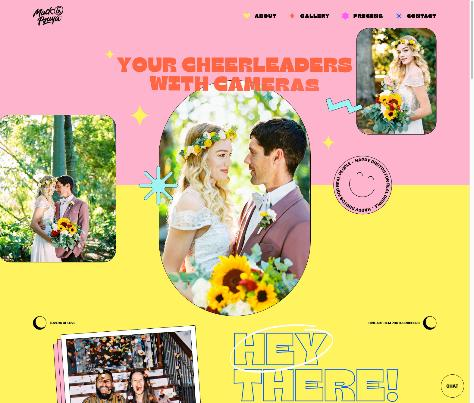
Mack & Pouya
Love this site. Maybe a way to navigate through church, designer, etc.?— his doc
- Device
- Loud colour blocks as navigation, outlined display type, polaroids and stickers, a horizontally scrolling gallery.
- Lands in
- Church / Designers / Shop as big playful blocks; designer profiles that feel like the designer.
- Used by
- 3 Colour
-
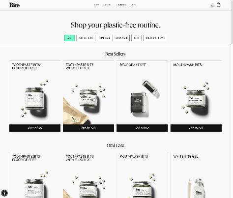
Bite
When you hover over the products, you get a short menu. Perhaps on ours, the menu lets you pick your Church/non-profit? Or other features (blurb about artist, etc).— his doc
- Device
- Hover a product card → a quick-action menu on the card.
- Lands in
- Design cards in the shop: Support: your church · About the designer · Add.
- Used by
- 123 (shop, not yet built)
-
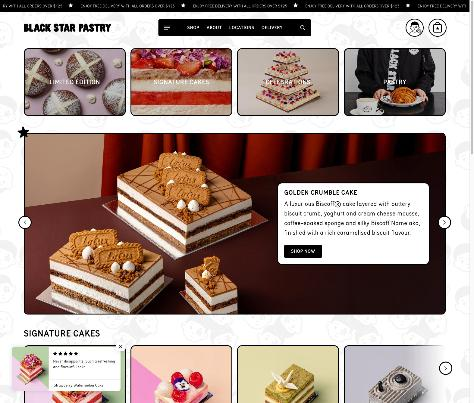
Black Star Pastry
I don't know what it is, but there's something here.— his doc
- Device
- A featured product hero with its story beside it; category tiles; a ticker.
- Lands in
- The shop landing: one featured design with the designer's line next to it.
- Used by
- (shop, not yet built)
Also on his list, not shown: Anyday ("go all the way through on any product") and Ghia ("products strewn throughout") — both pop-up-gated in capture. Full list and notes: INSPIRATION.md.
Studies — one per reference
Each study takes one site and does exactly what it does, with our verse and our store. Two beats each: the opening, and the device he commented on. These are the raw material; a concept is a combination of studies.
atterwasch
- The photograph as the whole frame; wordmark set into it; episode list; then a black page of chapters.
Benno's Light
- Washed image, letterspaced caps, one entry button; "All chapters" index sliding over the experience — his row 11.
Nomadic Tribe
- The paper disc on slate; a progress rail; each beat hands off to the next; the disc becomes the window onto the image.
Legend of Santar
- String lights, the three-line title lockup, one red Begin, "best with sound", the story arriving word by word.
Every Last Drop
- A sky band that changes colour as you scroll, a sun that becomes a moon; flat scenes; the day is the four Gospels.
Slavery Footprint
- Cream, two-tone serif, one question, two italic choices, chain links at the edges; then the answer with the same restraint.
sofi
- One huge word at a time with a tiny index; then the floating card that shows your church's name in a beautiful face — storyboard row 13.
Jitter circle stack
- Four blended circles in the Gospel colours drifting under the mark; they become the four Gospel buttons — storyboard rows 2 and 5.
Graza
- Split headline with a drawn mark between; the product stays while the story scrolls: design → designer → church → buy.
De La Calle
- Ticker, boxed nav, tilted can with a drip badge; tap a card and the whole room changes colour — Gospels as rooms.
Mack & Pouya
- Pink and yellow blocks, outlined "Hey there!", arch photo with stickers, polaroid + confetti, gallery; blocks as the navigation.
Bite
- White grid, mint filter pill, black add button; hover a card and a short menu slides up: Support your church · About the designer.
Black Star Pastry
- Ticker, category tiles, the big featured block with the designer's line beside the product, a signature row.
The three concepts (earlier, superseded by the studies)
Each concept is a different combination of the devices above. Same verses, same engine; the stylesheet and the devices differ.
Status — first draft. These three are early builds of the devices, and they are not there yet: none has real imagery (his references are image-led; ours are still type on colour), the mark and the four Gospel symbols are placeholders, and the Graza split-headline, sofi word-morph, and De La Calle room-to-room moves are only partly in. They exist so the lineage above can be argued over, not so one can be picked today.
-
1Paper
- Slavery Footprint — one serif line, centred, one thing to do next.
- sofi — the hero verse word by word; the church name in a floating menu.
- Graza — paper, serif display + working body; product page as story (to build).
- Benno's Light — related verses as a drawer.
-
2Documentary
- atterwasch — the verse on a full-bleed b&w photograph; the Gospels as the stark chapter list. Needs the photograph.
- Legend of Santar — a Begin moment; scroll animation without WebGL.
- Benno's Light — "All chapters" index sliding over the story.
- Pierre Hermé / Jitter — the mark as the transition device.
-
3Colour
- De La Calle — each Gospel a colour room; condensed caps; product → product as navigation.
- Every Last Drop — the page changes colour as you scroll.
- Mack & Pouya — colour blocks, outlined type, stickers; designer pages as their own world (to build).
- Benno's Light — related verses as a drawer.
Working build
The structural skeleton — every page, real verse text, the Bible picker, the funnel mock. Currently wearing concept 1's stylesheet.